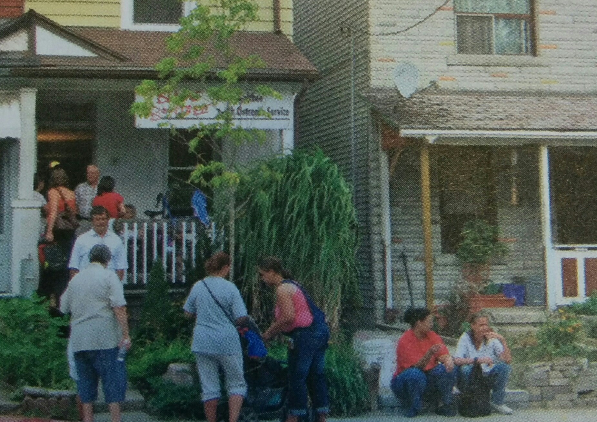

The BBYOS Approach
Working with at-risk youth and families is not easy or quick. Over the years, we’ve refined our approach in order to reach the people in our community. Outreach in Blake Boultbee is critical in ensuring that disadvantaged youth have the opportunity to get an education, join the workforce and raise a healthy family. BBYOS believes that this requires intensive, multi-disciplinary work with a young person over a period of years. Many social service agencies focus on a particular area of outreach, such as life skills. BBYOS offers a full range of services needed by at-risk youth and families.Building Relationships
Our integrated, comprehensive approach involves building relationships with our clients. Foundations of trust allow BBYOS counsellors to address the issues affecting a young person’s life, encouraging the development of self-esteem and life skills. BBYOS can provide at-risk youth with: support for survivors of physical, sexual, and emotional abuse; assistance in developing parenting skills; help in finding an apartment or a job; counselling and education about drug and alcohol abuse; and active counselling and education in all areas of sexuality and sexual health. BBYOS does what it takes to give young people a chance to improve their lives – and everyone deserves that chance.

Counselling
Two highly skilled counsellors (male and female, ethnically diverse) ensure that BBYOS is representative of, and accessible to, our community. Intensive long-term individual and family counselling/therapy helps our clients become emotionally and mentally healthier and more functional in school and work. It allows them to gain a greater self-esteem and identity and to have healthier relationships with peers and family members. Counselling also provides support for teenage parents, survivors of abuse and families facing drug and alcohol abuse.
Outreach
We actively reach out to our target population by meeting them in places other than our office. BBYOS provides advocacy and support for clients in school, at home, with employers, and in times of conflict such as court and during incarceration. We help find independent living quarters for young people who must leave violent and emotionally unstable home situations. We provide clients with emergency provisions and means of transportation (e.g. TTC fare) for school, work, and important appointments.

Prevention
BBYOS provides pro-active counselling and education in all areas of sexuality and sexual health. Our goal is the development of healthy sexual relationships and the prevention of AIDS and other sexually transmitted diseases. We seek to prevent crime by working with youth to address their behaviours, those that are detrimental to themselves and the community. We work to prevent drug abuse through counselling and education.
Success Story
Bob was a 15-year-old resident of the Blake Boultbee community who used to pop in and out of our office. He knew that he needed help with his violent behaviour, lack of self-esteem and motivation, and was frightened about dropping out of school. He was seriously concerned about his personal relationships, particularly with girls. He soon disclosed that he’d suffered years of horrific abuse from his stepfather. During his first two years with us Bob was involved in a number of serious incidents resulting in awful battles with his family and in some cases, criminal charges. But also during this time we were able to keep working with him on staying in school, to focus intensively on his self-esteem issues and to deal with his history of trauma and abuse. Bob then entered into a serious relationship with a girl and so wanted to ensure that he did not repeat the abusive patterns of his own life. After many years of regular counselling sessions, on his own and with and his girlfriend, Bob did complete his high school diploma, pursued his passion in animation , has become a very responsible father of two wonderful children, and is working full-time as a card carrying CAW member for a large food distribution facility. Bob and Karen are now living non-violently with dreams of owing their own home in the not too distant future.